地政学
マジュロは太平洋中央部の小国の首都で、広い海域、米国とのコンパクト、船舶登録、漁業権、気候外交を結びます。地図では小さく見えても、海洋安全保障と島国外交の前線です。環礁が国家の舞台になる街でもあります。
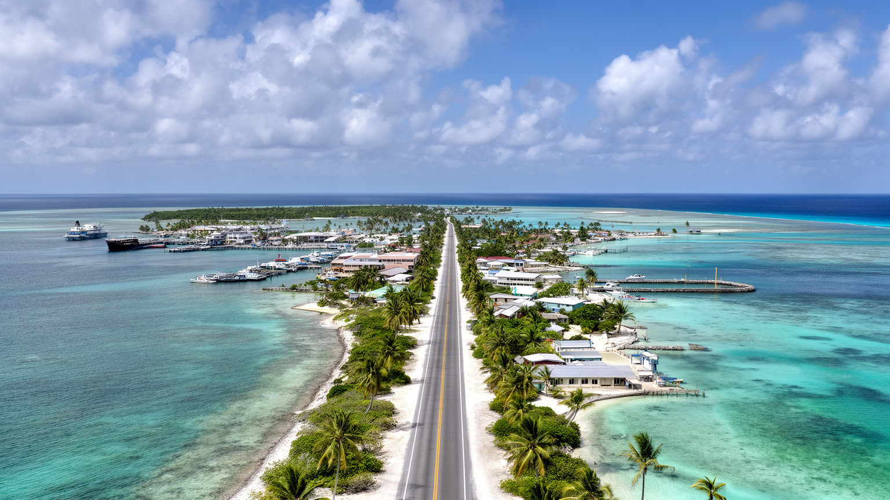
🇲🇭 マーシャル諸島 / マジュロ環礁 / World City Atlas
ラグーンに沿って細長く続く環礁の首都です。政府、港湾、漁業、学校、教会、米国との関係、気候危機、移民と送金が、海抜の低い土地に密集する都市です。
都市の骨格
マジュロは大きな都心を持つ都市ではなく、環礁道路に沿って集落、港、議会、学校、病院、店、教会が連なる首都です。海は美しい景観であると同時に、移動、食料、防災を左右する日常の条件です。
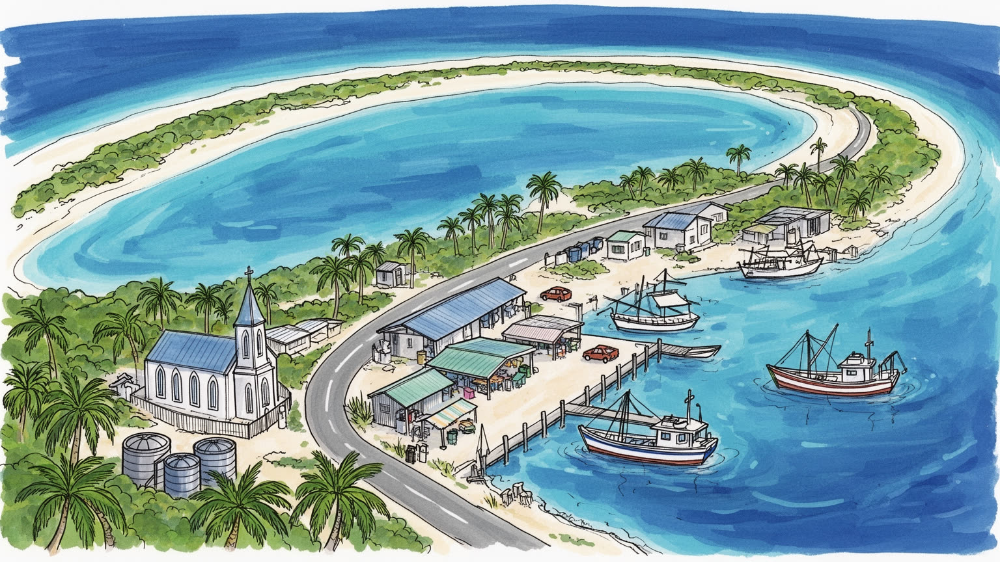
マジュロは太平洋中央部の小国の首都で、広い海域、米国とのコンパクト、船舶登録、漁業権、気候外交を結びます。地図では小さく見えても、海洋安全保障と島国外交の前線です。環礁が国家の舞台になる街でもあります。
雇用は政府、港湾、漁業、商店、学校、病院、建設、援助事業、海外からの送金に支えられるのです。現金収入は限られ、輸入物価や燃料費に弱いです。若者は公務、船員、移住を選びながら家族を今も支える島の首都でもあります。
教会、親族、学校、カヌーの記憶、編み物、歌、食卓、葬礼が都市の時間を作ります。キリスト教は公共生活に深く入り、マーシャル語と英語が行政、教育、家庭で交わるのです。海の知識も文化の核である街でもある場所です。
旅行者はラグーン、外洋、民芸、市場を楽しむが、住民は高潮、雨水、廃棄物、住宅密度、医療、教育、移住と向き合います。青い海の近さは、便利さと危険を同時に運びます。日常は細い土地で続く環礁の首都でもある場所です。
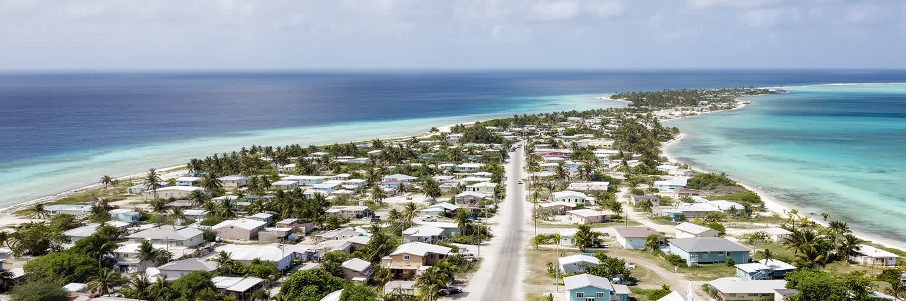
マジュロの都市形は、ラグーンを囲む細い環礁そのものによって決まるのです。陸地は広い平野ではなく、外洋と内海にはさまれた低い帯で、道路、家、学校、教会、商店、港、墓地、行政施設が一本の生活回廊に近い形で並びます。都心と郊外を明確に分けるより、デラップ、ウリガ、ジャリット、ライロック、ローラへと集落が連なり、移動は環礁道路に依存します。少し歩けばラグーンが見え、反対側には外洋の波が近いです。この近さは美しさである一方、土地利用の余裕を奪うのです。住宅を広げる、廃棄物を処理する、公共施設を移す、避難場所を確保するという普通の都市課題が、マジュロでは海抜と幅の制約に直結します。低い土地では雨水がたまりやすく、高潮や浸水は道路と家を同時に脅かすのです。人口規模は小さくても、国の行政機能、港湾、学校、病院が集中するため、土地の一つひとつの使い方が国家の持続性に関わります。環礁都市を読むには、海を背景ではなく都市計画の境界として見る必要があります。海岸のすぐそばで子どもが遊び、車が走り、店が開き、政府職員が働く風景は、マジュロの魅力であり脆弱性でもあります。空き地が少ないため、墓地、スポーツ場、駐車場、廃材置き場、雨水設備まで競合し、家族の土地利用の判断が公共性を帯びるのです。細い首都では、日陰を作る木一本や排水溝の詰まりも生活の質を左右します。
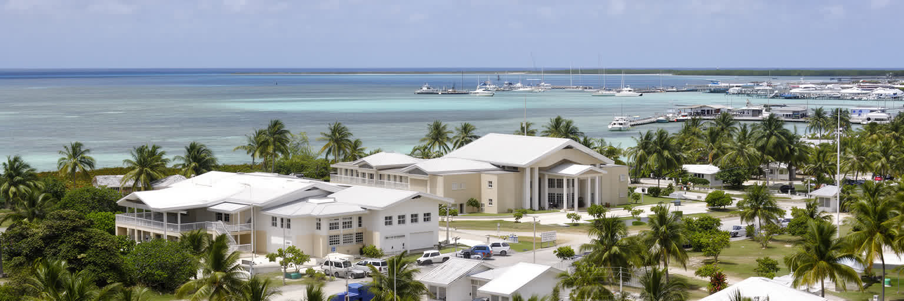
マジュロは小さな市街地でありながら、マーシャル諸島共和国の政治と外交を担う首都です。議会、行政機関、裁判、外国公館、国際機関、援助事務所、学校、病院が集まり、国の意思決定は環礁の限られた空間で進みます。国土は環礁と島々に分散し、排他的経済水域は広大であるため、首都の役割は陸上面積に比べて大きいです。米国との自由連合協定は安全保障、財政支援、教育、医療、移住に強く影響し、マジュロの政策議論にも影を落とすのです。さらに核実験の歴史、気候変動交渉、漁業権、海洋保護、船舶登録は、首都を国際政治の場に押し出しています。住民の暮らしはローカルですが、国の交渉相手はワシントン、国連、太平洋諸国、日本、台湾、オーストラリアへ広がります。都市の規模だけを見れば静かな島の町に見えますが、マジュロは大国の軍事史、海洋資源、気候正義を語る場所でもあります。小国外交では、人員も予算も限られるため、行政職員は複数の課題を同時に抱えます。外交の重さは会議室だけでなく、奨学金、病院紹介、港の管理、災害時の支援要請として家庭の生活に届きます。首都の公務員は親族社会の中で働くため、政策と個人的な責任が近いです。会議で決まる予算は、教室の屋根、離島便、医薬品、若者の進学機会へすぐ翻訳されます。首都の行政能力は、離れた環礁の声を集める力にも左右されます。通信、船便、会議参加の費用が限られるほど、マジュロが外島をどう代表するかが問われます。
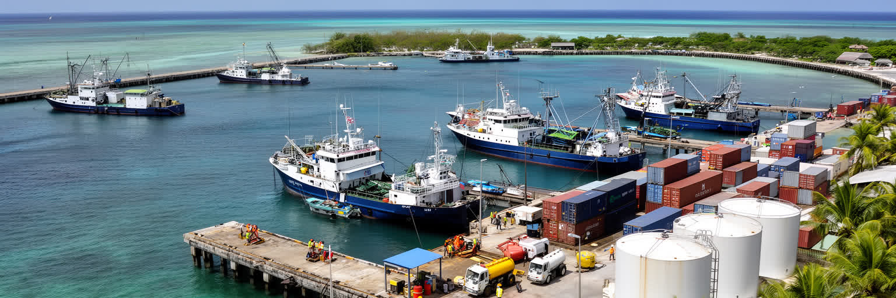
マジュロの港湾と漁業は、都市の現金経済を支える重要な基盤です。ラグーンは船を受け入れる天然の水面を提供し、コンテナ、燃料、生活物資、建材、冷凍貨物、漁船の補給が集まります。マーシャル諸島の周辺海域はマグロ資源で知られ、入漁料、転載、船員、加工、港湾サービスは国家財政と雇用に結びつきます。ですが、漁業は豊かな海の恵みだけではありません。資源管理、監視、外国船との契約、労働条件、価格変動、燃料費、冷凍設備の維持が必要で、港の仕事は細かな調整の連続です。輸入に頼る島では、港が止まれば食品、医薬品、燃料、建設資材の供給がすぐに不安定になります。外から来る船は収入をもたらす一方、ごみ、排水、感染症、治安、港湾安全の課題も持ち込むのです。漁業収入を地域の生活にどう戻すかは、マジュロの社会問題でもあります。港の近くでは大型車、倉庫、修理、商店、食堂が集まり、海に面した首都の実務が見えます。観光客が見る青いラグーンの隣で、都市は輸入品を下ろし、魚を運び、船を整備し、家計を支えています。ラグーンは景観である前に、働く水面です。若い船員や港湾作業者にとって、海は誇りと危険の両方を持つ職場です。安全訓練、休息、賃金、家族への送金が整って初めて、漁業の利益は都市の生活を厚くします。港の透明な管理は、漁業権収入への信頼にも関わります。海の利益が学校や医療へ回る実感を住民が持てるかが重要です。
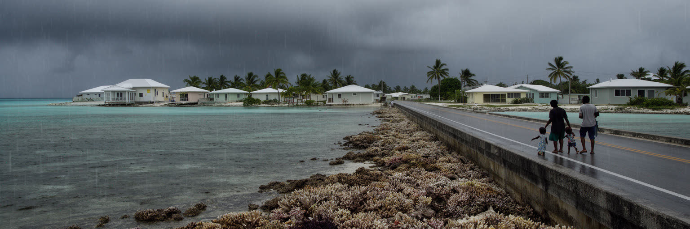
マジュロを語る時、気候危機は抽象的な未来予測ではなく、道路、井戸、墓地、学校、家の床に関わる現実です。環礁の陸地は低く、海面上昇、高潮、キングタイド、塩水浸入、干ばつ、豪雨は、飲み水、住宅、農作物、衛生、道路を同時に脅かすのです。防潮壁や埋め立ては一時的な余裕を作りますが、資金、資材、維持管理、景観、土地所有の問題を伴うのです。気候適応は技術だけでなく、どの集落を守り、どの公共施設を優先し、誰が移転費用を負担するのかという政治の問題になります。マーシャル諸島の人々には米国へ移住できる制度的な回路がありますが、移住は単純な解決ではありません。家族が分かれ、言語、仕事、教育、医療、土地への帰属が変わります。マジュロに残る人は、遠くへ出た親族からの送金に支えられながら、故郷を維持する役割も担います。気候外交で語られる「沈みゆく島」という表現だけでは、住民の選択と尊厳を捉えられありません。マジュロの未来は、海から逃げるか残るかの二択ではなく、守る、直す、学ぶ、移る、戻るという複数の行動を組み合わせる過程です。海は脅威であると同時に、記憶と生活の中心でもあります。避難訓練や貯水、学校での環境教育は、国際会議の言葉を家庭の行動に変えます。気候危機は外交文書だけでなく、子どもがどこで眠り、祖先の墓をどう守るかという問いになります。だから適応策には、技術と同じだけ文化への配慮が必要です。
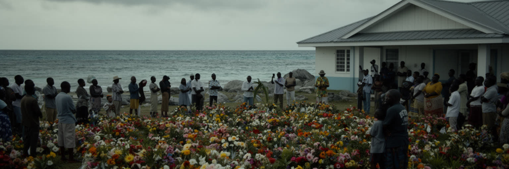
マジュロの政治と社会には、ビキニ、エニウェトク、ロンゲラップなどで行われた米国の核実験の記憶が深く残ります。実験地は首都そのものではありませんが、被ばく、移住、補償、健康被害、土地への帰還、文化の断絶は国家全体の歴史であり、マジュロの行政、教育、外交、家族の語りにも関わります。小さな島国が大国の軍事実験の場にされた経験は、現在の安全保障関係や援助交渉を単純な友好物語にしません。放射性物質への不安、故郷に戻れない人々、補償をめぐる手続き、医療の不足は、世代を越えて続く問題です。首都では記念行事、学校教育、議会での議論、国際会議を通じて、核の記憶が公共の言葉になります。観光や気候危機の話だけでは、マーシャル諸島の現代史は薄くなります。マジュロを読むには、青い海の美しさと、そこに刻まれた軍事史を同時に見る必要があります。核実験の記憶は、反核運動だけでなく、医療、土地権、外交、移住、教育、家族史へ広がります。被害を語ることは過去への固執ではなく、現在の政策と尊厳を守るための行為です。マジュロはその記憶を国際社会へ届ける声の集まる場所でもあります。被害者の証言や家族の記録は、教科書だけでは残せない細部を持ちます。首都で記憶を共有することは、外島の痛みを国家の中心へ戻し、補償と医療を現在の課題として扱う行為です。記憶を学ぶ場があるほど、若い世代は外交を自分たちの生活史として理解できます。
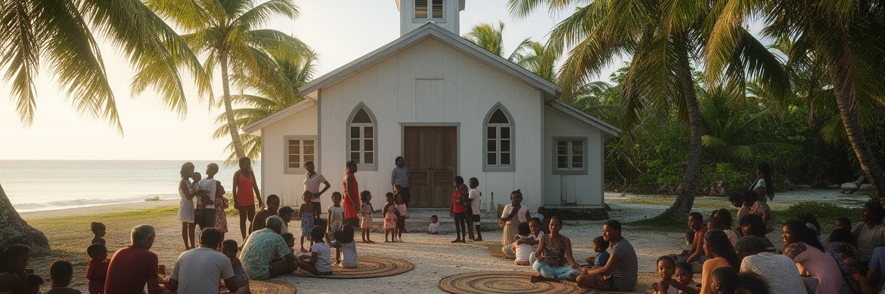
マジュロの日常は、教会と親族のネットワークによって強く支えられています。日曜の礼拝、聖歌、葬礼、結婚、学校行事、地域の集まりは、都市の時間割を作り、困った時の助け合いの回路にもなります。キリスト教は外から入った宗教でありながら、マーシャル語の説教、歌、服装、食事、家族の責任と結びつき、公共生活の一部になっています。親族関係は住宅、子育て、送金、病院への付き添い、移住者との連絡を支えますが、同時に若者や女性に重い義務を負わせることもあります。都市化が進むと、外島から来た人、海外から戻った人、外国人労働者、援助関係者が近い距離で暮らし、共同体の境界も変化します。教会は信仰の場であると同時に、情報、教育、音楽、福祉、政治的発言が集まる場所です。ですが、信仰の強さは多様な価値観との緊張も生みます。若い世代は英語、インターネット、海外経験を通じて別の生き方を知りながら、家族と教会への責任を負うのです。マジュロの文化を理解するには、観光向けの工芸や踊りだけでなく、礼拝の後の食卓、親族の相談、葬礼の準備、学校での歌を見なければなりません。共同体は美しい絆であり、時に重い制度でもあります。都市では現金収入が必要になるため、伝統的な相互扶助と賃金労働の時間がぶつかるのです。誰が食事を準備し、誰が親族を送迎し、誰が費用を出すのかという日々の調整に、文化の現在形が表れるのです。
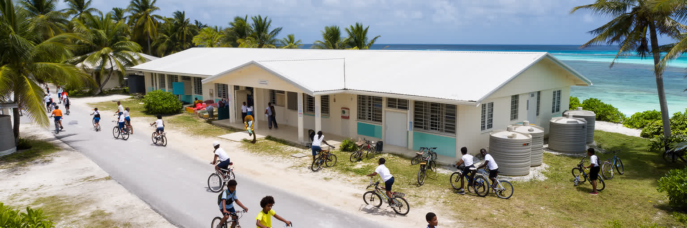
マジュロでは、教育が島内の仕事と海外への移動をつなぐ大きな橋になります。学校ではマーシャル語と英語が交わり、子どもたちは家族の土地や海の知識を持ちながら、米国や他の太平洋地域で学び働く可能性も視野に入れるのです。首都には中等教育、職業訓練、カレッジ、行政機関が集まり、外島から来る若者にとっては進学と就職の入口になります。一方で、教材、教員、通信環境、家庭の収入、通学交通、栄養、住まいの密度は学びの条件を左右します。優秀な若者ほど海外へ出る傾向があり、医療、教育、技術、行政の人材を国内にどう残すかは大きな課題です。移住は家族の収入と選択肢を広げるが、地域から人材が抜ける不安も生みます。若者はスマートフォンで世界とつながりながら、教会行事、親族の責任、島の行事にも参加します。マジュロの未来は、外へ出る力と戻って貢献できる場を両方作れるかにかかっています。気候危機を学ぶことも、単なる環境教育ではなく、故郷で生きる技術です。学校が海面上昇、健康、漁業、言語、歴史、デジタル技能を結びつけられれば、若者は島を離れるだけでなく、島を支える専門性を持てるのです。教育は環礁国家の防災でもあります。放課後のスポーツや教会の活動は、狭い都市で若者が居場所を持つためにも重要です。進学の夢を支える奨学金、通信環境、図書館、職業訓練は、首都の社会インフラです。
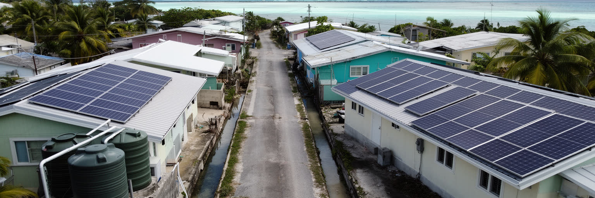
マジュロの住宅とインフラは、環礁都市の制約を最も具体的に示します。土地が細く限られるため、住宅は密集しやすく、家族や親族が近い距離で暮らします。雨水タンク、井戸、下水、浄化槽、電力、道路、通信、ごみ処理は、都市の快適さだけでなく健康に直結します。輸入品に頼る生活では、建材や燃料の価格が上がると修繕や建設が遅れ、古い家屋の負担が増すのです。廃棄物を置く余地が少ないため、海岸や空き地のごみは景観の問題にとどまらず、蚊、悪臭、海洋汚染、観光イメージにも影響します。低い土地では浸水が下水や飲み水を汚し、停電や道路冠水が学校、病院、港の機能を弱めるのです。都市計画上の選択肢は限られるが、だからこそ小さな改善が大きいです。雨水管理、太陽光、建物のかさ上げ、道路の排水、リサイクル、公共トイレ、医療廃棄物の管理は、首都を維持するための基本です。マジュロの住宅問題は、貧しさだけで説明できません。親族の近さを保ちたい気持ち、土地所有の慣行、移住者の帰省、気候リスク、援助事業の条件が絡みます。狭い土地で暮らしを続けるには、家を建てる技術と同じくらい、共同で使う水と道を守る制度が必要になります。道路沿いの歩行空間や照明、スクールバスの安全も見逃せません。都市が細いほど、車、子ども、犬、荷下ろし、冠水が同じ場所に集中し、日常の危険が増えます。小さな補修を先送りしない行政力が、生活の安心を守ります。
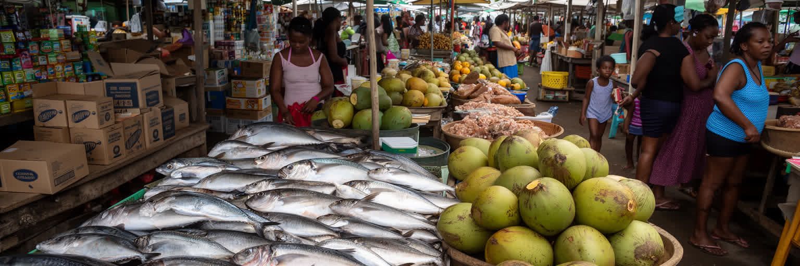
マジュロの食生活は、海の魚、パンノキ、ココナツ、タロイモの記憶と、米、缶詰、冷凍食品、砂糖飲料、輸入肉に大きく依存する現代の食卓が重なります。市場や小さな店には、地元の魚や農産品と船や飛行機で入る商品が並び、価格は燃料費、為替、港湾輸送に左右されます。都市化と現金経済は便利さを広げたが、生活習慣病、栄養の偏り、食品廃棄、家庭の支出負担も増やしました。漁業は食の自立を支える一方、気象、燃料、資源管理、船の安全によって変動します。外島からの食材は文化のつながりを保つが、輸送が乱れればすぐに不足します。教会行事や家族の集まりでは、食事はもてなしと共同体のしるしであり、単なる栄養ではありません。観光客が市場で見る魚や工芸品の背後には、仕入れ、氷、冷蔵、衛生、港の管理、家庭の台所があります。マジュロの食を読むことは、島の環境と世界経済の距離の近さを読むことでもあります。輸入食品が安く簡単に手に入るほど、地元の作物や漁の技術を保つ意味は見えにくくなります。学校給食、健康教育、家庭菜園、沿岸漁業の管理は、都市の福祉政策でもあります。食卓はラグーン、港、店、親族、世界市場を結ぶ小さな地図です。台風や船便の遅れが起きると、棚の空きや価格の上昇はすぐ家庭に届きます。食の安全保障は畑だけでなく、港、冷蔵庫、現金収入、健康教育を組み合わせて考える課題です。
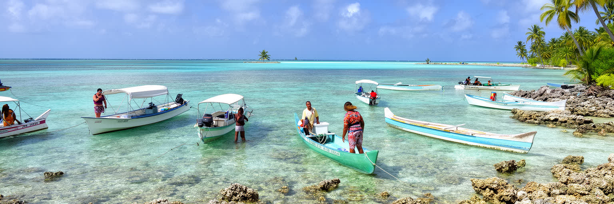
マジュロの観光は、大規模リゾートの華やかさより、ラグーン、外洋、民芸、第二次世界大戦の記憶、カヌー文化、外島への入口としての性格にあります。訪問者は青い水面、サンゴ、釣り、ダイビング、ローラの浜、工芸品、地元市場を楽しむが、観光の受け皿は限られ、交通や宿泊、医療、廃棄物処理の容量も大きくありません。島国の観光では、来訪者の消費が地元の店やガイドに届くか、外資や輸入品に流れるかが重要になります。文化を見せる場では、歌、編み物、カヌー、戦跡、核の記憶を軽い演出にせず、地域の説明と尊重を伴わせる必要があります。外島へ向かう旅行は魅力的ですが、天候、船便、航空便、通信、医療対応の不確実さを理解しなければなりません。マジュロは太平洋の静かな玄関であり、同時に脆いインフラの上に立つ受け入れ都市です。観光を増やすだけなら簡単な宣伝で足りるかもしれないが、持続させるには水、電力、ごみ、地域の礼儀、ガイドの収入、安全情報を整える必要があります。少ない滞在者でも、環礁では影響が大きいです。旅人がゆっくり滞在し、地元の店を使い、海と文化を消費しすぎない姿勢を持つ時、観光はマジュロの日常と衝突しにくくなります。観光の成否は写真映えだけでなく、訪問者が限られた水や道路を分け合えるかで決まるのです。静かな島時間を尊重するほど、旅は深くなり地域の負担は軽くなります。
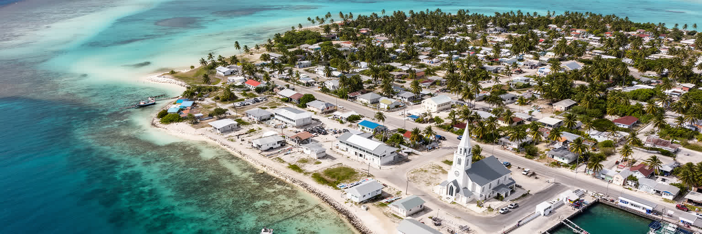
マジュロは、人口や面積だけで測ると小さな都市です。しかし、環礁国家の首都として見れば、太平洋の多くの課題が凝縮された場所です。低い土地に政府、港、学校、病院、教会、住宅、市場が集まり、海面上昇、核実験の記憶、米国との関係、漁業権、移住、送金、輸入依存、廃棄物、若者の進路が互いに絡みます。巨大な高層ビルや地下鉄網はないが、都市としての複雑さは薄くありません。道路一本が止まれば生活が滞り、港の遅れは食卓に届き、気候交渉は家の床の高さに関わります。マジュロを読むことは、都市を大きさではなく結節の密度で見る訓練でもあります。ラグーンの美しさは、国家の脆弱性を覆い隠す飾りではなく、人々が働き、祈り、学び、移り、戻る場所の条件です。首都は外島を代表する一方、外島からの人や文化に支えられています。海の向こうの大国との関係も、家庭の送金や病院への紹介、奨学金として具体化します。マジュロの価値は、世界経済の中心に似ることではなく、限られた土地で国家と共同体を維持し、気候時代の都市の意味を問い直す点にあります。小さな環礁首都は、未来の沿岸都市に向けた早い警告でもあります。ここで起きる水、土地、移住、記憶の問題は、遠い島だけの例外ではありません。海辺に暮らす世界中の都市が、マジュロの経験から脆弱性と尊厳を同時に学ぶことになります。その学びは、数字よりも生活の細部に宿るのです。